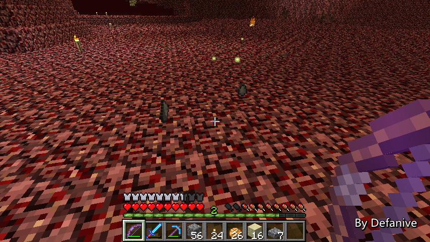
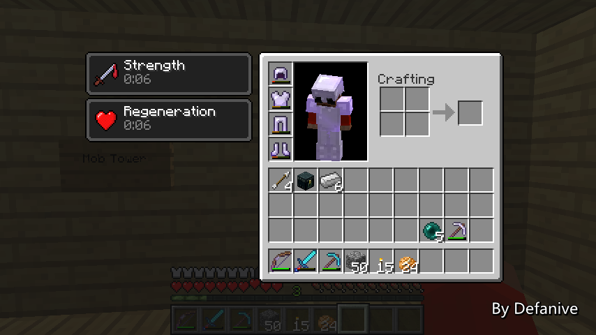

首页
上一页
253
254
255
256
257
258
258
259
260
261
262
263
下一页
末页
defanive2
无尽黑夜
14
解决方法就是把砂岩换成半砖
这个活塞不应该产生BUD的
但是却产生了，非常不科学
貌似是1.5更新后才出现的问题
——来自 MCLive
19028楼
2013-07-14 19:09
defanive2
无尽黑夜
14
现在水流终于可以正常运作了
——来自 MCLive
19030楼
2013-07-14 19:10
defanive2
无尽黑夜
14
进行了3分钟的测试，看看速度是多少
PS 如果没记错的话
创造里面的速度是每小时7500个墨囊左右
之前这个塔刚建造的时候速度是3500个左右
看看现在速度怎么样
——来自 MCLive
19036楼
2013-07-14 19:17
defanive2
无尽黑夜
14
结果现在的速度只有每小时1300个
不科学 = =
——来自 MCLive
19039楼
2013-07-14 19:18
defanive2
无尽黑夜
14
又测试了3分钟，这个速度看起来才正常一点
——来自 MCLive
19040楼
2013-07-14 19:23
defanive2
无尽黑夜
14
速度是每小时2800个左右，还是不是很正常
不过不管了，反正差这点速度也没多大区别 = =
——来自 MCLive
19041楼
2013-07-14 19:24
defanive2
无尽黑夜
14
等等。。刚刚算错了
物品热键栏里面还有一组没有算上。。
这样的话速度是每小时4100个左右
感觉不错了
——来自 MCLive
19042楼
2013-07-14 19:25
defanive2
无尽黑夜
14
接下来就来干正事吧，拆塔
——来自 MCLive
19043楼
2013-07-14 19:26
defanive2
无尽黑夜
14
回收完了，蛋疼不少
接下来就带到刷怪塔吧
——来自 MCLive
19044楼
2013-07-14 19:29
defanive2
无尽黑夜
14
从地狱门往回走
如果大家不记得了的话
这个是旧版的地狱猪人塔
效率非常低，要达到高速必须要清理周围的无效面积
原计划是用TNT炸的，但是炸完了几个岛之后就实在没耐心了
于是这个工程弃坑了
也就有了后来的地狱门版的猪人塔
PS 现在又有更高效率的猪人塔了
准备等各种工程都做完之后再开动
——来自 MCLive
19046楼
2013-07-14 19:32
defanive2
无尽黑夜
14
每天都要狙击几只ghast练练手
PS ghast的确是怪物的原名，不是ghost
现在仍然是每天都可以收到几条回复
告诉我“是ghost不是ghast”。。
——来自 MCLive

19047楼
2013-07-14 19:34
defanive2
无尽黑夜
14
建造信标当中
以后会对信标做一定的保护
——来自 MCLive
19048楼
2013-07-14 19:39
defanive2
无尽黑夜
14
突然发现身上没有带任何矿物。。
看起来要回家一次
——来自 MCLive
19049楼
2013-07-14 19:42
defanive2
无尽黑夜
14
来献祭吧！
——来自 MCLive
19050楼
2013-07-14 19:45
defanive2
无尽黑夜
14
力量可以让我空手杀怪
而持续回血可以保证即使饿了也不会死亡
——来自 MCLive

19051楼
2013-07-14 19:46
defanive2
无尽黑夜
14
刷经验ing
——来自 MCLive
19052楼
2013-07-14 19:46
defanive2
无尽黑夜
14
很快就刷到LV32了
PS 截图的一瞬间刚刚饥饿损血了
于是画面的侧了过来 = =
——来自 MCLive
19053楼
2013-07-14 19:51
defanive2
无尽黑夜
14
手动杀怪的各种奇怪掉落 = =
PS 其实我一直不明白僵尸为什么会掉土豆
——来自 MCLive
19054楼
2013-07-14 19:52
defanive2
无尽黑夜
14
1.6.2的小僵尸
如果没记错的话，小僵尸移动速度比普通僵尸快很多
但是相对于普通僵尸，小僵尸无法携带任何装备
PS 而且也不能长大，杯具一个
——来自 MCLive
19055楼
2013-07-14 19:54
defanive2
无尽黑夜
14
接下来我们说一下1.6的一些新特性吧
首先不得不提的就是attribute系统了
下方的+7AD就是attribute的显示
当然还有更多的attribute可以通过修改器得到
对于地图制作来说是非常有用的
也有很多新玩法可以由此探究出来
PS 例如可以给某个物品加上防御的attribute
当玩家手持这个物品时，就有了防御效果
因此这个物品其实就是一个“盾牌” = =
——来自 MCLive
19057楼
2013-07-14 20:01
defanive2
无尽黑夜
14
一会有事做，今天先直播到这里了
1.6的更多更新我们下次慢慢体验！
刷怪塔改造这个大工程算是完成得差不多了
——来自 MCLive
19058楼
2013-07-14 20:03
defanive2
无尽黑夜
14
不知道有没有玩跑跑卡丁车的朋友呢
最近的挂机活动RP爆发，得了一辆金棉HTLE
于是昨晚改装完之后录了视频，S2城镇高速，1:45:68
喜欢玩跑跑的一起玩吧，顺便求指教
视频来自：
优酷
19118楼
2013-07-15 23:49
defanive2
无尽黑夜
14
UHC S2E2 已发布
在追S2的同学可以前往围观！
PS S2视频效果并不是很好，如果刚开始看UHC的推荐观看S3和S1！
http://tieba.baidu.com/p/2455325226
19186楼
2013-07-18 16:11
defanive2
无尽黑夜
14
刚刚到达米国，最近事情都会比较忙
19292楼
2013-07-23 07:03
defanive2
无尽黑夜
14
一时更新不了请谅解。。不过忙完几天之后会照常更新的，以及即将到来的1周年也会庆祝。。总之还不弃坑，MC还要继续打的
19293楼
2013-07-23 07:05
defanive2
无尽黑夜
14
UHC S2E3 也发布了！
今天下午争取做完了E3和E4，终于可以继续进行S2的发布了
再次，S2由于各种原因是夭折的赛季，是作为给喜欢UHC的观众的小小福利
S3和S1赛季视频效果更好！
无论怎么说，欢迎围观：
http://tieba.baidu.com/p/2455325226
19361楼
2013-07-25 13:17
defanive2
无尽黑夜
14
好久没玩MC了！
假期结束前趁着还在国内，都在玩网游
刚到米国这几天都比较忙碌
不过，总算是有时间打MC了！
PS 最近开始调生物钟了
希望能做到12点前睡觉，早上8点起床
不过开学了可能又会变化了。。
——来自 MCLive
19376楼
2013-07-25 22:50
defanive2
无尽黑夜
14
自从有了村民工程之后，通过交易就可以得到基本钻石制品了
甘蔗也有稳定的甘蔗场来源
但是不足就是甘蔗场处于村民工程处
必须要人在附近才会生长，而且也需要手动收割
PS 在国外发图会比较慢
——来自 MCLive
19377楼
2013-07-25 22:58
defanive2
无尽黑夜
14
如果说能够做一个自动收割的甘蔗场
就设置在家里面，平常自动收割
积少成多，如同刷铁机一样
那么应该就可以得到一个很稳定的甘蔗来源
免去了手动收割的麻烦
同时也能保证足够的甘蔗进行钻石制品的交易
——来自 MCLive
19378楼
2013-07-25 23:01
defanive2
无尽黑夜
14
之前设计了一个全自动甘蔗场
非常高效率、高面积利用率（体积也高？）、材料节省
在繁华的帮助下一起在创造服里建设了一个
效果非常的理想
由于高度比较大，决定再开一个地下室进行建设
PS 和繁华逗B了一个通宵才建好
——来自 MCLive
19382楼
2013-07-25 23:06
首页
上一页
253
254
255
256
257
258
258
259
260
261
262
263
下一页
末页